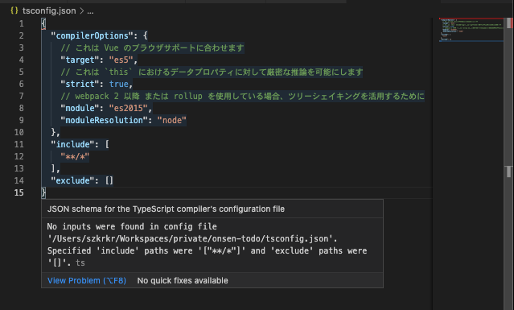
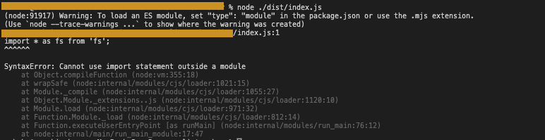

TypeScript/JavaScript
TypeScript
cookie, session storage, local storageに保存したいときに使える
https://codesandbox.io/s/web-storage-inteface-897nl
JWT with custom claim typescrit sample
https://codesandbox.io/s/jwt-decode-sample-g27yk
Utility Typesいつ使う???
- Partial
-> interafaceちゃんと整理すれば使わない? - Required
-> interafaceちゃんと整理すれば使わない? - Readonly
-> interafaceちゃんと整理すれば使わない? - Record
- Pick
- Omit
- Exclude
- Extract
- NonNullable
-> どこで使うの.. - Parameters
-> 引数の型はよくとるから - ConstructorParameters
→ Tuple化しないでよくね?? - ReturnType
-> Reduxとかでも使える。このtypeなら、このReturn的な感じで。 - ThisParameterType →？
- OmitThisParameter →？
ThisType
→？ https://www.typescriptlang.org/docs/handbook/utility-types.html
- https://qiita.com/k-penguin-sato/items/e2791d7a57e96f6144e5
fakeのtypescriptが必要？？？？？

Vue Project使用中..
https://stackoverflow.com/questions/41211566/tsconfig-json-buildno-inputs-were-found-in-config-file
package.json, tsconfig関連 -> cannot-use-import-statement-outside-a-module

"type": "module",をpackage.jsonに
https://fredriccliver.medium.com/syntaxerror-cannot-use-import-statement-outside-a-module-69182014b8c6
exports is not defined
file:///sample/dist/index.js:2
Object.defineProperty(exports, "__esModule", { value: true });
^
ReferenceError: exports is not defined
at file:///sample//dist/index.js:2:23
package.json
"module": "commonjs" -> "module": "ES2015"
JavaScript
Library
Charts
Kinds Of Chart are followings.
逆引き
- 4象限マトリクスを作りたい場合は、Scatter Chart とか Bubble Chartをつかう。Labelの表示はChart.jsではできない。